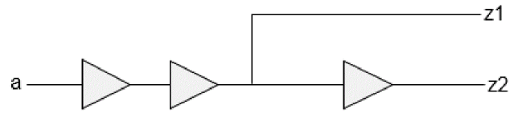

Secondary Load Dependent Networks
If there is a timing path from one output pin to another pin, the model extractor considers both the primary output loading and the secondary output loading when output-to-output delays are computed. In the following figure there is an output-to-output path from z1 to z2:
Figure -6 Output-to-Output path from z1 to z2

The extracted timing model for this block consists of two delay arcs - one from a -> z1 and another from a -> z2. But the delay of arc a -> z2 also depends on the secondary loading, that is, at port z1.
This gives rise to a delay arc from a to z2 which is dependent on two loads and one input slew. So this arc will be dumped as a three-dimensional delay table because the delay depends on the primary output loading at z2, as well as a secondary output loading at z1.
The table template will be as follows:
lu_table_template (lut_timing_1) {
variable_1: input_net_transition;
index_1 (“0...0 1.0 2.0 3.0 4.0 5.0”);
variable_2: total_output_net_capacitance;
index_2 (“0...0 1.0 2.0 3.0 4.0 5.0”);
variable_3: related_out_total_output_net_capacitance;
index_3 (“0...0 1.0 2.0 3.0 4.0 5.0”);
}
By default, 3D arc modeling is disabled - the software considers 3D arcs as 2D arcs in timing modeling.
Return to top